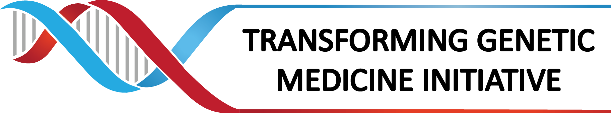

The goal of TarK is to create an archive of all transcript sequences from Ensembl and other sources, including historical gene sets. To ensure robust tracking of exact changes between gene and transcript sets, checksums are included at a fine grained level. The data is accessible via an API to explore and determine the exact changes between sequences from one release to the next. In the longterm, TArK will become the primary repository for all sequences in all Ensembl releases.
This beta is provided to give the community an opportunity to explore TArK's functionality. Please provide feedback on possible improvements to help meet future needs. Note, this is a beta site and should not be counted upon to be stable, the API may change and this server may be unavailable at times.
Funding:


 Transcript Archive Beta
Transcript Archive Beta